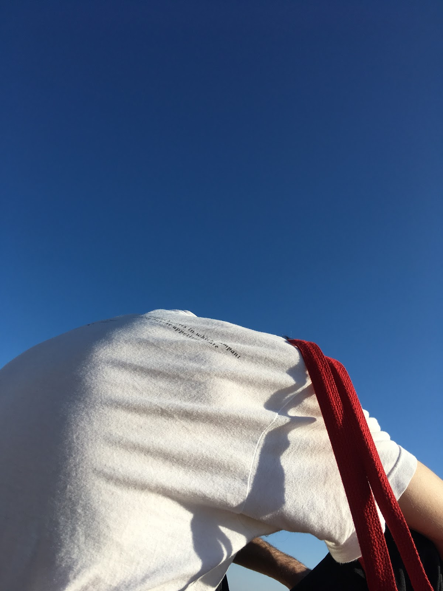
On December 8th, a day after Biden won the election, we went down to Coney Island to visit the aquarium.
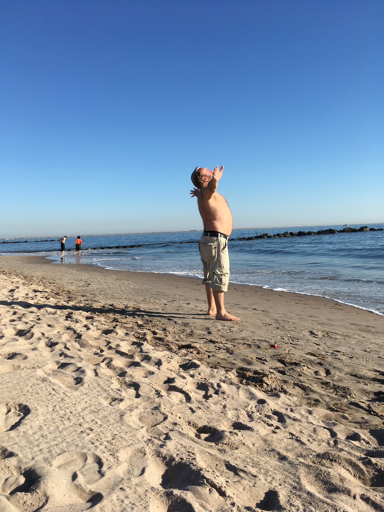
It had been a difficult morning, sleepy and hesitant and then suddenly blaringly awake with coffee on the train. Things looked up when we got to the beach and found a sunbather.
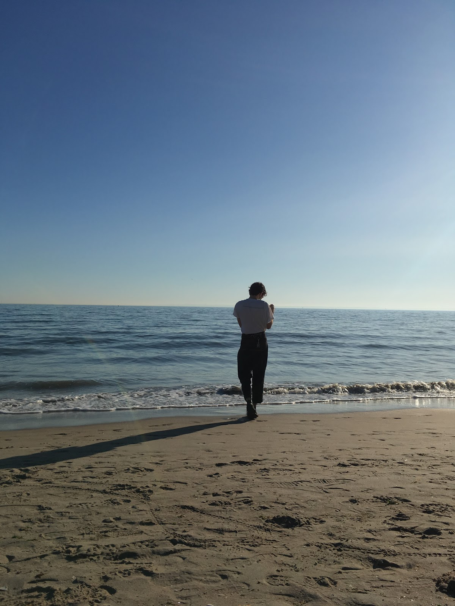
Elliott stood by the water to record the movement of the ocean.
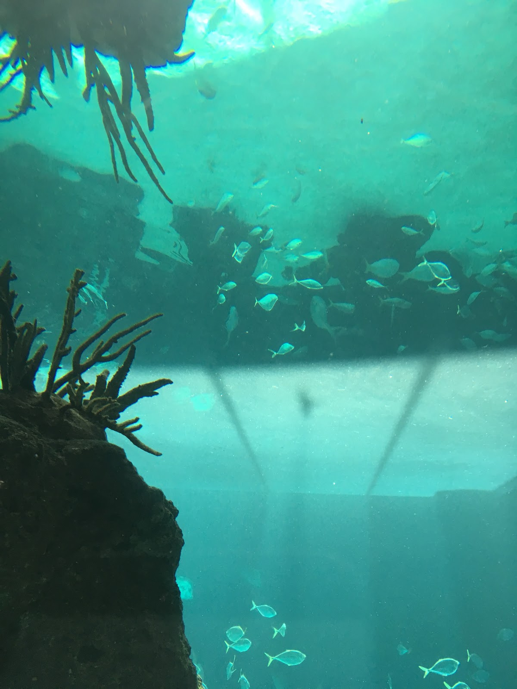
We bought tickets from a robot outside the aquarium. The first exhibit was this fish tank with a mirrored ceiling.
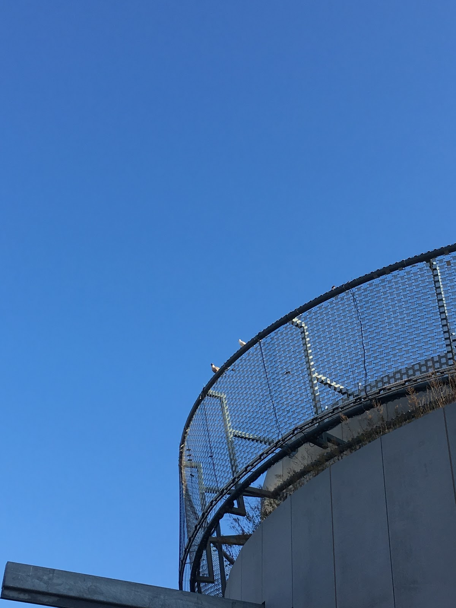
I saw two birds perched atop one of the aquarium buildings. They're looking at each other in this image - probably in love.
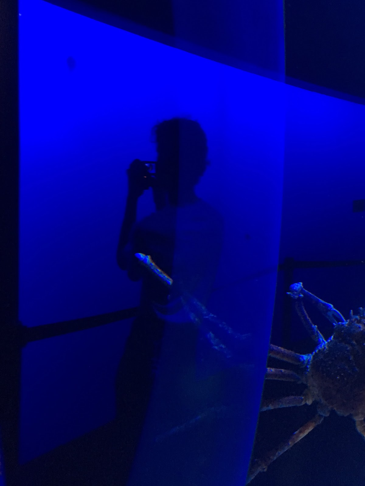
We took turns recording the animals. Here, Elliott looks at a jellyfish.
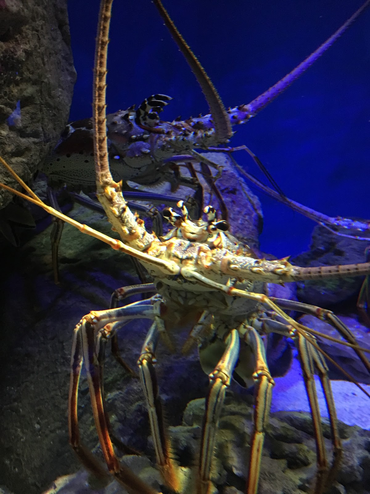
Here is a large crab.
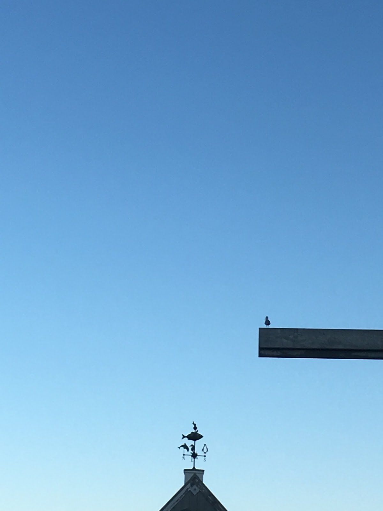
I saw this bird while we waited in line to enter another building. We also shared an order of french fries in line and no food has quite lived up to them since.
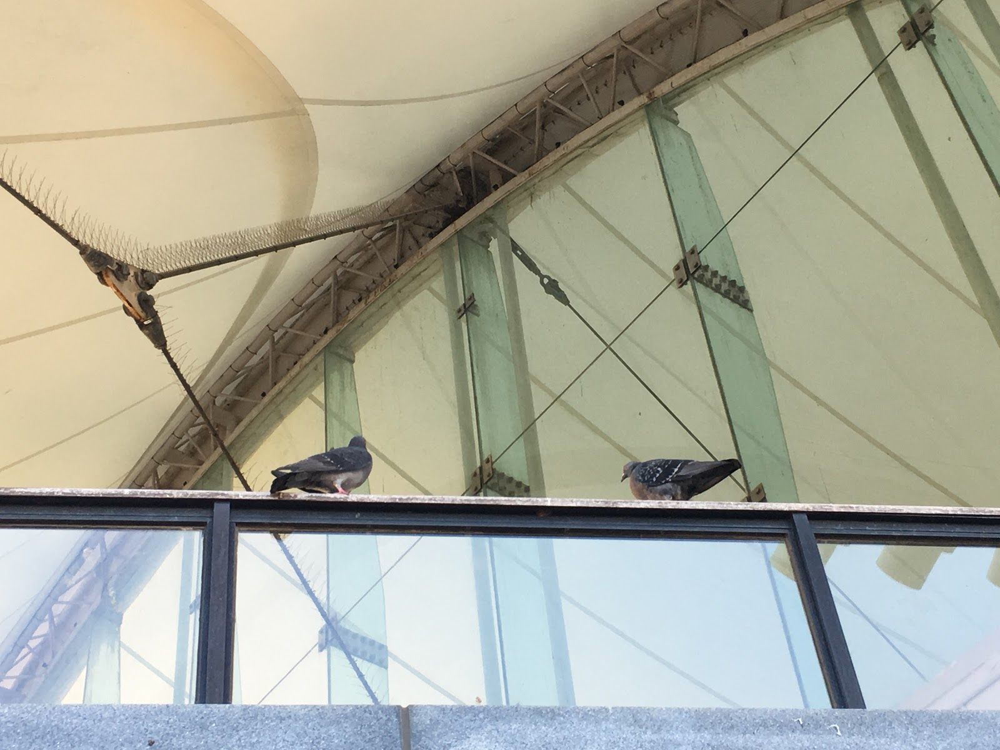
We left the aquarium and came home to eat dinner and hang out. It was a great day.
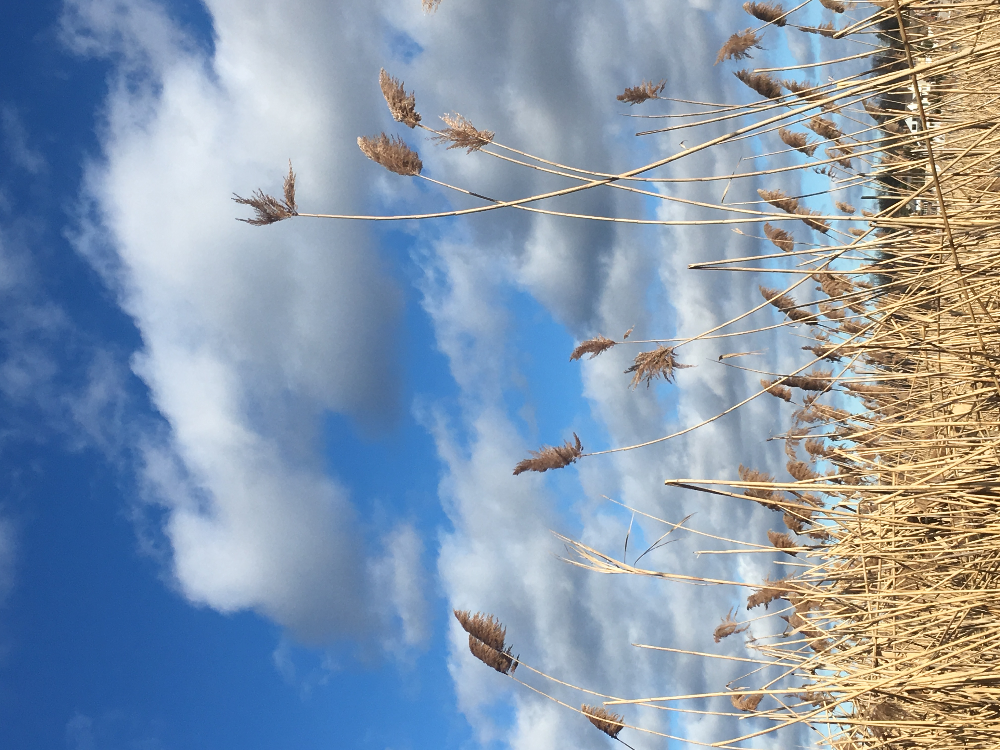
A field of tall grasses leaning in the wind in Little Neck, Queens.
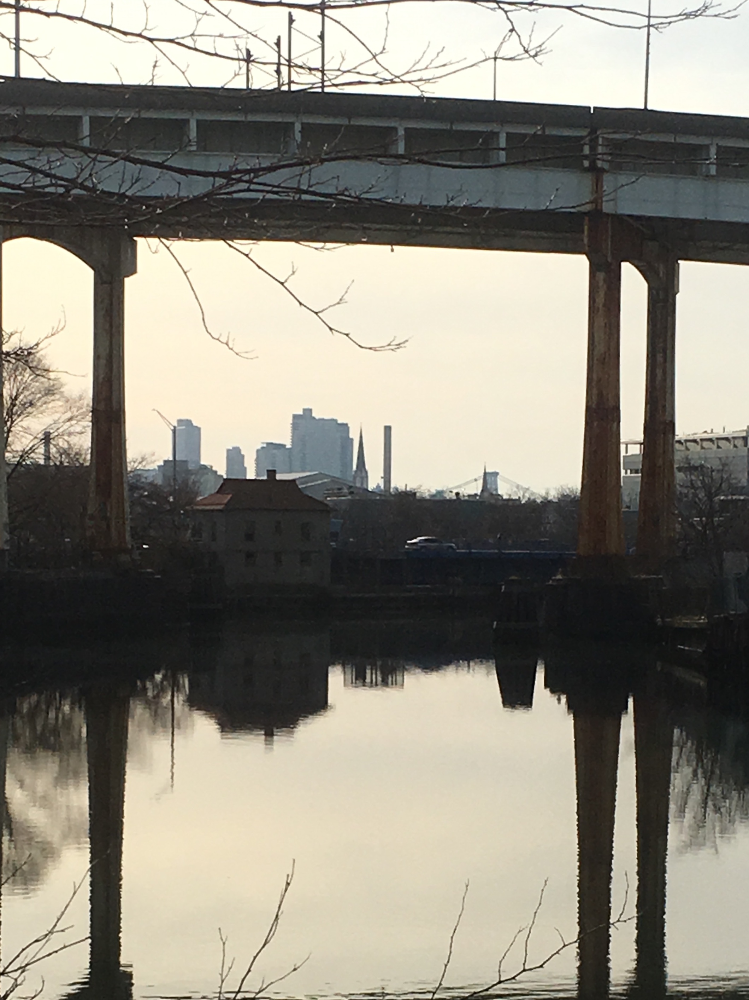
A field of tall grasses leaning in the wind in Little Neck, Queens.
dear world,
This is our first post on our new blog. We thought it would be dope to document the things we do together in this format.